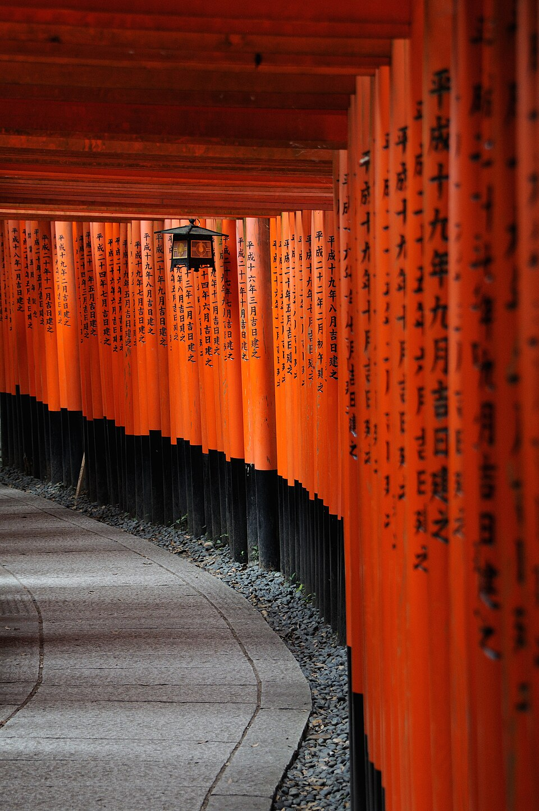
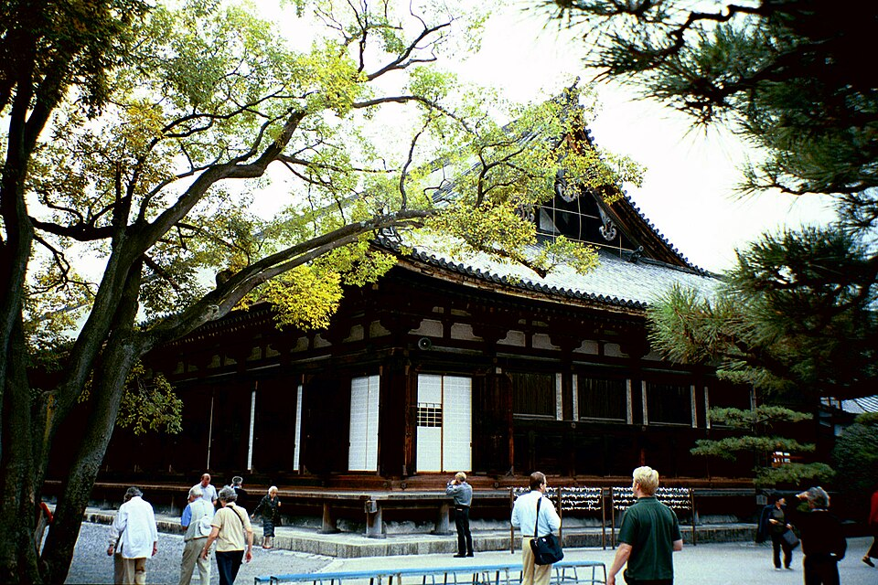
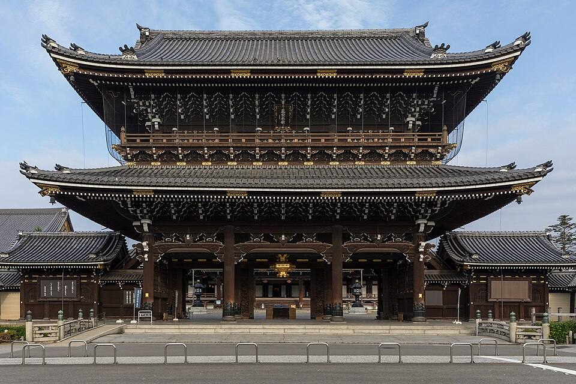
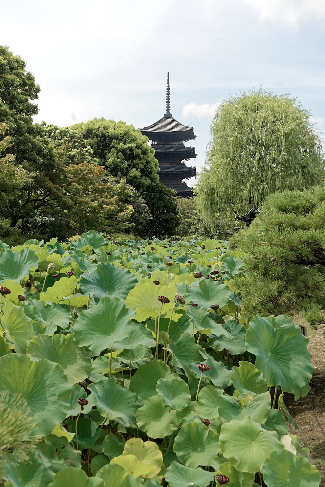
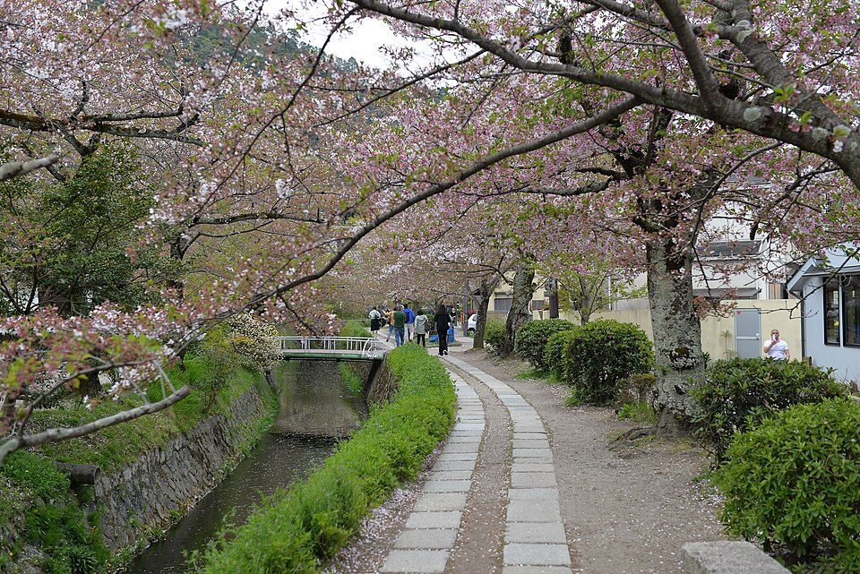

Kyoto: что посмотреть
13 главных мест на карте - нажми на точку или на карточку, чтобы открыть подробности, фото и часы работы.
Как распределить по дням: Fushimi Inari (1) и храмы у вокзала (4,5,6) - рядом, их можно совместить в один день. Arashiyama (8) - отдельная поездка на полдня на запад. Kinkaku-ji (7) и Философская тропа (11) - на север, лучше тоже отдельным днём или вместе через Nijo Castle (9).
Карта

1. Fushimi Inari TaishaЮг · ~10 мин, JR Nara line до станции Inari 2. Kiyomizu-deraHigashiyama · ~15 мин автобус 100/206 + 10-15 мин пешком в гору
2. Kiyomizu-deraHigashiyama · ~15 мин автобус 100/206 + 10-15 мин пешком в гору 3. Gion / HanamikojiHigashiyama · ~15 мин автобус 100/206
3. Gion / HanamikojiHigashiyama · ~15 мин автобус 100/206
4. Sanjusangen-doУ вокзала · ~17 мин пешком или автобус 206/208, 4 остановки
5. Higashi Hongan-jiУ вокзала · ~8-10 мин пешком
6. To-jiУ вокзала · ~20-25 мин пешком или 1 остановка Kintetsu 7. Kinkaku-ji (Золотой павильон)Север · ~30-40 мин, автобус 101/205 или метро + автобус
7. Kinkaku-ji (Золотой павильон)Север · ~30-40 мин, автобус 101/205 или метро + автобус 8. Бамбуковая роща Arashiyama и Tenryu-jiЗапад · ~15-20 мин, JR Sagano line до Saga-Arashiyama
8. Бамбуковая роща Arashiyama и Tenryu-jiЗапад · ~15-20 мин, JR Sagano line до Saga-Arashiyama 9. Nijo CastleЦентр · ~15 мин, метро Karasuma + Tozai до Nijojo-mae
9. Nijo CastleЦентр · ~15 мин, метро Karasuma + Tozai до Nijojo-mae 10. Nishiki MarketЦентр · ~5 мин метро до Shijo + 5 мин пешком, или 20-25 мин пешком
10. Nishiki MarketЦентр · ~5 мин метро до Shijo + 5 мин пешком, или 20-25 мин пешком
11. Философская тропа (Tetsugaku-no-michi)Higashiyama, север · ~30-40 мин автобус до Ginkaku-ji-michi 12. Река KamoЦентр · ~15-20 мин пешком
12. Река KamoЦентр · ~15-20 мин пешком
Фото: Wikimedia Commons (лицензии на страницах каждого места). Время в пути - по путеводителям (kyoto.travel и др.), часы и цены проверены 20.10.2026 - перепроверь перед визитом, сезонно меняются.